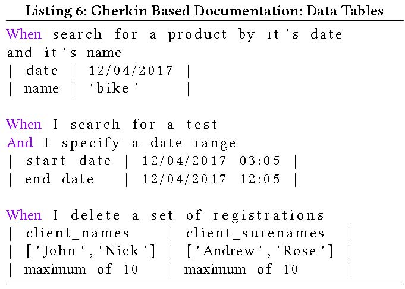
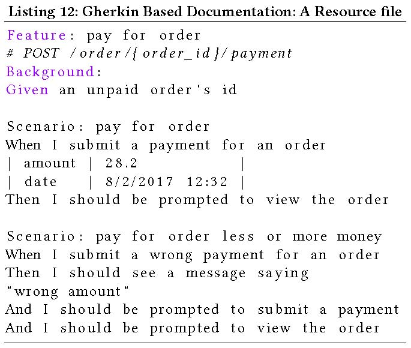

This is a web copy of https://doi.org/10.1145/3184558.3191654. Published in WWW2018 Proceedings © 2018 International World Wide Web Conference Committee, published under Creative Commons CC By 4.0 License. The modifications from the original are solely to improve HTML aiming to make it Findable, Accessible, Interoperable and Reusable. augmenting HTML metadata and avoiding ACM trademark. To reference this HTML version, use:
Permalink: https://w3id.org/oa/10.1145/3184558.3191654
DOI: https://doi.org/10.1145/3184558.3191654
WWW '18: Proceedings of The Web Conference 2018, Lyon, France, April 2018
Speeding up the development process of Web Services, while adhering to high quality software standards is a typical requirement in the software industry. This is why industry specialists usually suggest ”driven by” development approaches to tackle this problem. In this paper, we propose such a methodology that employs Specification Driven Development and Behavior Driven Development in order to facilitate the phases of Web Service requirements elicitation and specification. Furthermore, we introduce gherkin2OAS, a software tool that aspires to bridge the aforementioned development approaches. Through the suggested methodology and tool, one may design and build RESTful services fast, while ensuring proper functionality.
CCS Concepts: • Software and its engineering → Requirements analysis; API languages; Software development techniques;
ACM Reference Format:
Anastasios Dimanidis, Kyriakos C. Chatzidimitriou, and Andreas L. Symeonidis. 2018. A Natural Language Driven Approach for Automated Web API Development. In WWW '18 Companion: The 2018 Web Conference Companion, April 23–27, 2018 (WWW ’18 Companion), Lyon, France. ACM, New York, NY, USA 6 Pages. https://doi.org/10.1145/3184558.3191654
Effectively satisfying customer requirements in the typical software development life-cycle has always been of major concern, both to the industry and the academia. New, “driven by” software engineering methodologies like Behavior-Driven Development and the Agile manifesto have been introduced, dictating continuous communication between the software engineer and the customer. These approaches aspire to embrace change at any stage of the process, while allowing the evolution of software requirements.
On the other hand, the development of web applications and web services has been constantly gaining traction, providing efficient software solutions to customer problems. Since the adoption of the “web as an application platform”, developers and industry specialists are continuously searching for methods to swiftly and efficiently design and develop Web applications, and REST seems to provide a credible approach to tackle the basic challenges faced.
REST-oriented architectures and their accompanying tools, although efficient, focus mainly on the design and development aspects of software, and consider the transition phase of requirements to design elements as granted. However, this transition requires expertise and, in many cases, may lead to delays in software releases and wasted man-effort. Acknowledging this necessity of adaptation to the current development context, we propose a (semi)-automated methodology that combines Behavior Driven Development (BDD) primitives – linked to the User requirements phase – and Specification Driven Development (SDD) primitives – linked to the System design phase – for rapidly building RESTful web services.
Building upon Kent Beck's Test Driven Development (TDD) approach [5, 17], Dan North's BDD approach [1] dictates the emloyment of User Stories for describing software functionality. On the other hand, SDD dictates the usage of Web API Specifications like OpenAPI Specification (OAS), RAML, and API Blueprint in order to ensure validation, uniformity and reusability.
Our Natural Language Driven Development (NLDD) approach, tries to merge the two aforementioned development strategies. According to NLDD, when a Web Service needs to be developed, people discuss about what it should offer. These discussions eventually lead to a natural-language-described documentation of the service, based on the Gherkin language, primarily used in BDD. This high-level documentation is automatically translated to a valid OAS document, by employing gherkin2OAS, a low code tool developed for this purpose. At the end of the process, the development team has two documents in its hands: a business document and a technical document, connected with each other through a software process. As such, any changes on the business document can be immediately depicted to the technical document, while the benefits of BDD - usage in testing frameworks, semi-structured documents written in natural language - and SDD - automated code generation through client and server scaffolding - are harvested. Gherkin2OAS employs Natural Language Processing (NLP) techniques in order to process the contents of the Gherkin documents, and produces a valid OAS version 2 [4] document of the service at hand.
The process of developing a RESTful Web Service, according to NLDD, consists of three stages in a feedback loop:
The main goal of NLDD is to enforce the communication between all the involved parties. More specifically:
This paper is organized as follows: In Section 2, we go through the concept of Gherkin-based Web Service documentation, while in Section 3 we describe a mapping between Gherkin and the OAS concepts. Section 4 presents the gherkin2OAS tool and Section 5 discusses related work. Finally, in Section 6 we discuss about ambiguous topics, open issues and future work.
In order to document the Web Service in natural language, we employ the Gherkin language: A Business Readable, Domain Specific Language that lets you describe software's behaviour without detailing how that behaviour is implemented. [2]. Gherkin's goal is to put stakeholder parties into the position of imagining using the system themselves. Through this process, stakeholders and developers create “acceptance tests” that describe a concrete example of the envisioned software's functionality.
In Gherkin, acceptance tests are documented in a Gherkin file [2, 18], which uses special keywords for developing its structure and meaning: (i) Feature (ii) Background (iii) Scenario (iv) Given (v) When (vi) Then (vii) And (viii) But (ix) * (x) Scenario Outline (xi) Examples.
Software features are described inside the Gherkin files using the Feature keyword. Each feature contains several scenarios in order to accommodate the stakeholders’ requirements. Each scenario is a single concrete example of how the system should behave in a particular situation. If one implements the behavior documented by all the scenarios defined, it should result with the expected behavior for the feature. Scenarios are declared with the Scenario keyword.
All scenarios follow the same pattern: They start with the context of the system's state, continue with an interaction and finally check the outcome. This pattern is expressed in Gherkin files with the Given ...When ...Then keyword sequence:
Each of the lines in a scenario is known as a step. More steps can be added to each Given, When and Then sections of the scenario using the keywords And and But:
Gherkin also supports data tables, since steps in a scenario may describe data that don't easily fit on a single line of a Given, When or Then sentence. Gherkin allows the placement of such details underneath a step:
We argue that the usage of Gherkin along with NLP alone, produces a vague set of possible natural language descriptions. Furthermore, the overall system defined by such a process would be heavily dependent on the performance of the NLP mechanism employed, and would, therefore, be unreliable. Instead, the concept is that the user should follow a set of instructions1 on how to document the Web Service in natural language. The instructions are intuitive and easy to follow. When the user executes the gherkin2OAS software tool, natural language is translated to specifications.
Through this approach, the reliability of the system is verified by the adherence to the provided instructions. As long as the user follows the documentation rules, he/she can be sure that a valid OpenAPI specification will be generated by gherkin2OAS. The validation of the final OpenAPI Specification is performed within the gherkin2OAS tool, using the swagger validator 2 . If the user does not follow the instructions, then the output will definitely be invalid.
Taking the above points into consideration, a mapping between Gherkin concepts and OAS elements was designed.
Since that scenarios in Gherkin language describe state transitions and that the OpenAPI specification is used to document RESTful APIs, there is a natural connection between the two concepts. So in a sense, describing the behavior of the Web Service in Gherkin is the same as describing representational state transfer at an abstract level. Moreover, there is a relation between Domain Application Protocols3 that business stakeholders know best and REST. They both describe state transitions.
From Gherkin, we adopted the keywords: Feature, Background, Scenario, Given, When, Then, And, But and the Data Tables. As for OAS, also a subset of elements was adopted4.
At a first level, the description of a Web Service is organized in resources that the service will expose. This practically means that each resource is described in Gherkin language in it's own “resource document”. This resource-based approach comes with the following benefits:
A resource document is a file written in the Gherkin language, with the .resource extension. The name of the file is the name of the resource and also part of the REST API path. For example a product.resource file could result in an /api/product endpoint. The .resource extension is necessary so that the gherkin2OAS tool can distinguish a resource file from any other.
In order to achieve the desired mapping of the Gherkin scenarios to OAS, we took advantage of the state machine logic of Gherkin. As such, a When step represents a request in the OAS world and a Then step represents a response. However, since the end goal is to assist developers in producing RESTful Web Services specifically, we needed to take into consideration the statelessness of REST. As a result the Given step does not fit as smoothly as the other two do, in a RESTful Web Service description, and was therefore used to map other features. This makes the When ...Then mapping as the core of the proposed Gherkin-based approach.
The verb(s) of a When step are mapped to one of the four mainstream CRUD HTTP verbs: GET, POST, PUT, DELETE [3]. On the other hand, the nouns of a When step are mapped to request parameters.
Advanced parametrization can be achieved with Gherkin's data tables. Each row (or column, since both table orientations are supported) could hold a certain type of data. The first column, which is required, holds the names of the parameters, the second, parameter examples and the third, parameter value ranges. This rule allows us to map Gherkin data tables to rich OAS parameter schemas that include parameter types and ranges (derived from the examples) .

Additionally, the data tables can be named so that they can represent an OAS model, if the step sentence ends with a semicolon (:) and contains a noun. It should be clarified that data tables can be used both in a When and a Then step.
Both required and non-required parameters are supported. By default all mentioned parameters are treated as required. However, if the same operation (or model) is described twice in the same resource file with different parameters, then only the common parameters between the different descriptions will be treated as required.
A response is exclusively described in a Then step and it can contain three different types of sentences:
A response message is extracted by phrases in quotes. The actual phrase in quotes is further analyzed, to extract a status code based on common HTTP conventions.
Additionally, given that a Web Service can be fully RESTful and embracing the concept of Hypermedia as the Engine of Application State (HATEOAS) [8, 12, 13, 16], the proposed methodology supports HATEOAS. If a sentence in a Then step includes a verb and the name of another (already documented) resource, then the sentence is mapped to a state transfer in the generated OAS.
Since OAS version 2 does not directly support HATEOAS5, we made use of the x-* operator. Therefore after conversion to OAS, a HATEOAS link array will be included in an x-links object within a response object. This is the only extension of OAS that we use.
Roles and path hierarchies in OAS are supported using the Given step. Since REST is stateless, the Given step can be used to set a different kind of context: which actor is performing the scenario or what is the relation between two resources. This kind of context can be described in a Background section of the resource file, or in the Given step of a scenario.
In the Background section, if two resource names are mentioned in a sentence and one of them is the currently described one, then the latter is a child of the first. This is translated in the sense that the path name of the described resource is going to display the hierarchical relation i.e. /api/parent/child in the generated OAS.
Furthermore, if a Given sentence contains a role - in the form of a noun -, then the content which follows the Given sentence, is relevant only for this role (permission-wise). If the role is declared at the Background section, then all the Gherkin scenarios described in the document, are relevant to the role. If, however, the role is only declared in a Given step of a scenario, then only that scenario is relevant to the role. Currently, a Given step inside a scenario can be used only to describe a role.
Lastly, comments are supported with a ’#’ in the file and their usage is strongly advised. Comments can be used to add more flexibility around the rules we just described, since they will always be ignored. They are still natural language descriptions that can improve the readability of a document significantly. All the previous rules are organized in a single document which is provided along with the gherkin2OAS software tool.

The gherkin2OAS software, written in Python 3, was developed to convert Gherkin-documented resource files to OAS documents, based on the previously described Gherkin-based rules. It consists of two main units: the NLP Engine and the Formatter.
The NLP engine parses the resources files, performs a preprocessing step and then generates a technical model from the Gherkin-based natural language. The design goal of this module was to employ as less machine learning as possible, in order to avoid unpredictable results. The NLP Engine performs a resource by resource top down analysis. It starts with the roles and relations, then the requests and responses and finally works its way to parameters, models, status codes and HATEOAS links. It uses common NLP techniques [9] such as tokenization, POS tagging and word lists to extract technical information from natural language. The NLP Engine supports most of the OpenAPI Specification's data types, which it derives from the parameter examples in data tables. The Formatter,on the other hand, receives as input the technical model generated by the NLP Engine. Its responsibility is to organize the technical model's information into a valid OAS.
The technical model contains two sub-models: 1) the HATEOAS transitions between resource files and 2) the transitions between the Gherkin scenarios. These two sub-models are used by a graph plotter that draws two graphs of the REST API, based on the detected resource relations. The first graph (Figure 1), called Resource Graph, displays the transitions between resources. The second graph (Figure 2), called Application State Graph, displays transitions between application states, which, in the Gherkin world, are transitions from scenario to scenario. The second graph is a more detailed version of the first one, showing what happens within each exposed resource. It has two versions, a technical and a non-technical one, where transition verbs and response messages are derived from the OAS and the Gherkin-based documentation respectively. The Resource Graph and the Application State Graph can be used to validate the expected functionality of the service. They can also be used to further analyze technical aspects of the API such as performance, required transitions to reach a resource, etc.
In [7, 14, 15] the research objective is the development of software tools that would reduce the cost and speed of software development. As part of this research, NLP methodologies have been developed, that extract features from software requirement documents, annotated by humans using a requirements ontology graph. After that, a software tool receives as input the annotated text and produces as an output a technical model. Following this work, we built on existing widespread technologies such as Gherkin and OAS, instead of custom-made ones, in order for our methodology have a larger impact on development teams.
Furthermore, in [10] a case is made for generating tests from Gherkin scenarios using NLP. Moreover, in [6], the authors propose modeling existing Gherkin scenarios so that they can be consumed by model-based testing tools and so that inter-scenario interaction can be achieved. Finally, [11] also proposes a modeling concept of the Gherkin language that is eventually translated to code. In our case, we used lightweight NLP techniques to transform Gherkin constructs into OAS specifications that can be further be used to scaffold client and server code.
In this paper, we showed how the combination of two established software development methods can be combined into one, for improving the overall development process. We tuned the concept to work best with RESTful development by integrating the HATEOAS and OAS concepts into the proposed solution. The goal is to assist development teams with an agile RESTful API development strategy.
Even though our focus was to provide a robust method and a tool for transforming requirements to specifications in order to bridge communication barriers, the results of this work can also help in a quantitative manner by scaffolding the source code of the web service from the OAS specification using tools provided by the open source community. It has been shown that transforming requirements expressed in natural language to source code can increase developer productivity [19].
One of the main challenges in our approach is to maintain the benefits of natural language, while maintaining a deterministic result. One could argue that the implemented NLP rules constrain the user from expressing the requirements in even more natural ways. However, the description of the system in terms of resource files tackles this concern. That is because, even though descriptions in a single file must be short and specific, describing the service in multiple resource files and scenarios allows the user to be very verbose in the end. With the proposed design we are trying to guide the user to be expressive not in paragraph sizes, but in resource and scenario counts. In addition, comments can be used within the resource files as notes to add more expressiveness to the documentation while not risking conversion results.
Another point of discussion is the debate about whether the proposed methodology is worth to learn versus writing straight in OAS. However, the proposed solution is not to be used instead of OAS. The main goal is to enforce communication between parties involved in the development of a Web Service. Of course, at least basic knowledge of OAS is required, otherwise the tool would have no use for the developer. Additionally, it should be noted that writing a service directly in OAS can be proven a very tedious process especially for large services. On the other hand, our experimentation has shown that 211 and 269 lines of Gherkin are mapped to 909 and 898 lines of OAS respectivelly in two of our test scenarios6.
In terms of future work, the OpenAPI specification version 3 can be adopted. We used the OAS version 2 because it was the only one available at the time we developed this method. In version 3, nested parameters (change 3) and HATEOAS (change 7) are better supported. Moreover, polymorphism in OAS (multipleof, oneOf, anyOf, allOf) could be supported with natural language, but being more technical, it probably wouldn't have much use for business stakeholders. Last but not least, the whole system could be integrated into an IDE that would be aware of our method and would generate OAS and graphs on the fly.
Finally one can find the gherkin2OAS tool 7, a usage video demo 8, a full example of resource files 9 and their generated OpenAPI specification 10 in the URLs provided as footnotes.
1https://github.com/anasdima/gherkin2oas/blob/master/Gherkin-Instructions.pdf
2 https://pypi.python.org/pypi/swagger-spec-validator
3https://en.wikipedia.org/wiki/Domain_Application_Protocol
4https://github.com/anasdima/gherkin2oas/blob/master/OpenAPI-Specification-v2-support.PNG
5https://github.com/OAI/OpenAPI-Specification/issues/577
6https://github.com/anasdima/gherkin2oas/tree/master/examples
7https://github.com/anasdima/gherkin2oas
8https://www.youtube.com/watch?v=G5TNixy-dEc
9https://github.com/anasdima/gherkin2oas/tree/master/examples
10https://github.com/anasdima/gherkin2oas/tree/master/generated-specifications
This paper is published under the Creative Commons Attribution 4.0 International (CC-BY 4.0) license. Authors reserve their rights to disseminate the work on their personal and corporate Web sites with the appropriate attribution.
WWW '18, April 23-27, 2018, Lyon, France
© 2018; IW3C2 (International World Wide Web Conference Committee), published under Creative Commons CC-BY 4.0 License. ACM ISBN 978-1-4503-5640-4/18/04.
DOI: https://doi.org/10.1145/3184558.3191654
{kind=link}